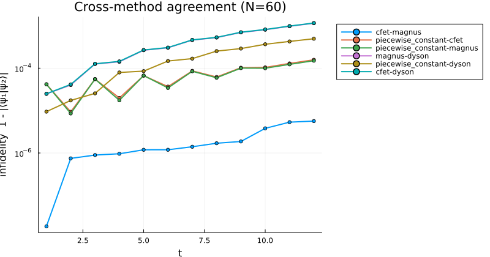
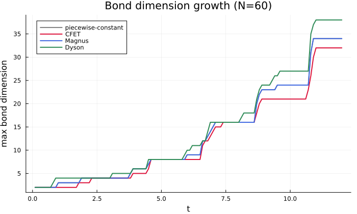
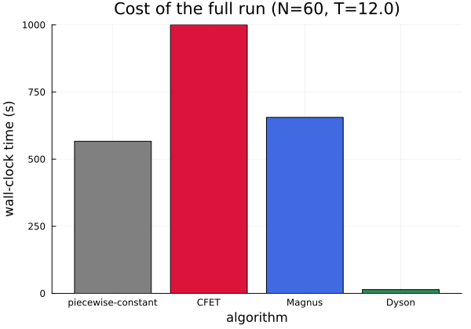

Large-system benchmarks
Every other benchmark in this documentation checks accuracy against an independent dense reference, which is only possible on small chains — dense diagonalization is exponential in system size. This page checks a different thing: that all four algorithms, independently implemented from genuinely different mathematical constructions (a local TDVP sweep, a Dyson-series MPO, an exponentiated Magnus generator, and a commutator-free product of exponentials), continue to agree with each other at a production-relevant system size, and reports what each one actually costs there.
Model throughout this page: the same driven transverse-field Ising chain used elsewhere in this documentation — H(t) = -Σᵢ SzᵢSzᵢ₊₁ - g(t) Σᵢ Sxᵢ with g(t) = sin(3t) + 0.5 — at N = 60 sites, evolved to t = 12 with dt = 0.1 (120 steps), cutoff = 1e-10, maxdim = 200. "cfet" uses order 4, "magnus" order 2, "dyson" order 2 (and, separately below, order 3); "piecewise_constant" does not take an order.
Cross-method agreement
Pairwise infidelity 1 - |⟨ψ₁|ψ₂⟩| between every pair of methods, checked every 10 steps:

Maximum infidelity over the full trajectory, for every pair:
| pair | max infidelity |
|---|---|
cfet – magnus | 5.6e-6 |
piecewise_constant – magnus | 1.5e-4 |
piecewise_constant – cfet | 1.6e-4 |
piecewise_constant – dyson | 4.9e-4 |
magnus – dyson | 1.14e-3 |
cfet – dyson | 1.16e-3 |
This lands exactly where the methods' documented convergence orders predict. cfet-magnus — the two ~4th-order methods — are the tightest pair by more than an order of magnitude. piecewise_constant (2nd order) disagrees with them at the ~1.5e-4 level, and every pair involving dyson at order 2 (whose own documented global order is lower still) is the loosest, at 4.9e-4–1.16e-3. None of this is a discrepancy to explain away — it is different methods at different formal orders disagreeing by amounts consistent with those orders, at N = 60, which is exactly what "the FSM construction's size-extensivity holds at production scale" should look like. The direct (non-FSM) Dyson construction this replaced would not show this: its error grows sharply with chain length (see Scope and limitations), so this same check at N = 60 would have been dominated by that growth rather than by the order differences actually visible here.
Dyson order 2 vs order 3
Because dyson_evolve is cheap enough at this bond dimension to rerun almost for free (see Cost below), raising its order gives a direct, no-extra-infrastructure check that the FSM construction's order parameter behaves correctly at this system size, not just at the small chains used elsewhere in this documentation:
| pair | max infidelity |
|---|---|
dyson(order 3) – magnus | 2.1e-6 |
dyson(order 3) – cfet | 8.6e-6 |
dyson(order 2) – magnus | 1.1e-3 |
dyson(order 2) – cfet | 1.2e-3 |
Raising the order from 2 to 3 tightens agreement with the ~4th-order methods by very close to two orders of magnitude — dyson(order 3) vs. magnus (2.1e-6) is in fact tighter than cfet vs. magnus itself (5.6e-6, above) — while the wall-clock cost barely moves: 38.7 s, versus 14.3 s at order 2 and 655–1000 s for cfet/magnus. That is the FSM construction's order parameter doing exactly what it is documented to do, confirmed at N = 60 rather than only on the small chains used elsewhere in this documentation.
Bond dimension growth

All four methods track each other closely and grow in the same step-like pattern — expected, since they are all representing the same physical state to comparable accuracy. dyson runs consistently at or above the others toward the end of the trajectory, consistent with its lower formal order needing slightly more bond dimension at fixed truncation cutoff to reach the same state-fidelity target.
Cost

| method | wall-clock (120 steps) |
|---|---|
piecewise_constant | 566.6 s |
cfet (order 4) | 1000.4 s |
magnus (order 2) | 655.5 s |
dyson (order 2) | 14.3 s |
The ~40–70× gap is architectural, not incidental: piecewise_constant, magnus, and cfet all evolve the state by one or more internal TDVP sweeps per step (cfet uses two exponentials per step, the most expensive of the three here), while dyson_evolve applies a single MPO to the state via apply — no iterative sweep at all. At the bond dimensions this model reaches (~30–38), that architectural difference dominates over any per-order cost increase. This does not change the accuracy guidance elsewhere in this documentation (cfet and magnus remain more accurate per step, see Scope and limitations); it does mean dyson_evolve is worth considering wherever its accuracy at a given order is sufficient, particularly since raising its order remains inexpensive (see above).
Cost scaling with system size
Separate, shorter run (T = 3, dt = 0.1, 30 steps) across three system sizes, to check that cost scales reasonably with N rather than blowing up:
| N | piecewise_constant | cfet | magnus | dyson |
|---|---|---|---|---|
| 20 | 19.1 s | 30.4 s | 21.6 s | 1.6 s |
| 40 | 44.9 s | 64.2 s | 44.6 s | 1.6 s |
| 60 | 63.7 s | 107.9 s | 64.5 s | 2.7 s |
Roughly linear in N for all four methods over this range, at the low bond dimensions this shorter, lower-drive-amplitude run reaches.